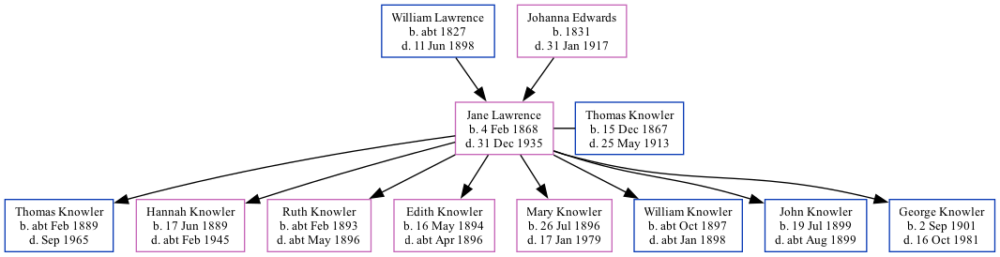

Jane Knowler (née Lawrence) 1868 - 1935
[ Home ] | [ Calendar ] | [ Surnames Index ] | [ Family History ]The daughter of William Lawrence (a harbor laborer) and Johanna Edwards, Jane Lawrence, the great-great-aunt of <a href="I1.html">Nigel Horne</a>, was born in Ramsgate, Kent, England on Feb 4, 1868<span class="citation">1,2,3,4,5,6</span> and married Thomas Knowler (an agricultural laborer with whom she had 8 children: <a href="I370.html">Thomas William</a>, <a href="I369.html">Hannah Mary</a>, <a href="I374.html">Ruth Adelaide</a>, <a href="I373.html">Edith May</a>, <a href="I366.html">Mary Elizabeth</a>, <a href="I372.html">William John</a>, <a href="I367.html">John</a> and <a href="I371.html">George Thomas</a>) at Ebenezer Chapel, Meeting Street in Ramsgate on Jul 29, 1888<span class="citation">8</span>.</p><p>Jane spent all of her life in Kent, England. Throughout her life, she lived in several places around the county: at Rear of Southwood Lodge, St Lawrence, Thanet, Kent, England on Apr 2, 1871<span class="citation">9</span>; in Staple on Apr 5, 1891<span class="citation">2</span>; in Woodnesborough on Mar 31, 1901<span class="citation">3</span>; and at Shingleton Cottages, Eastry on Apr 2, 1911<span class="citation">4</span>. <p>She died on Dec 31, 1935 in Hastingleigh, Ashford, Kent<span class="citation">6,7</span>.
Parents
- William was born c. 1827
- Johanna Brooker was born in 1831
Children
- Thomas William was born c. Feb 1889
- Hannah Mary was born on Jun 17, 1889
- Ruth Adelaide was born c. Feb 1893
- Edith May was born on May 16, 1894
- Mary Elizabeth was born on Jul 26, 1896
- William John was born c. Oct 1897
- John was born on Jul 19, 1899
- George Thomas was born on Sep 2, 1901
Citations
- 1871 England Census Online publication - Provo, UT, USA: The Generations Network, Inc., 2004.Original data - Census Returns of England and Wales, 1871. Kew, Surrey, England: The National Archives of the UK (TNA): Public Record Office (PRO), 1871. Data imaged from the National
- 1891 England Census Online publication - Provo, UT, USA: The Generations Network, Inc., 2005.Original data - Census Returns of England and Wales, 1891. Kew, Surrey, England: The National Archives of the UK (TNA): Public Record Office (PRO), 1891. Data imaged from The National (Relation to Head of House: Wife)
- 1901 England Census Online publication - Provo, UT, USA: The Generations Network, Inc., 2005.Original data - Census Returns of England and Wales, 1901. Kew, Surrey, England: The National Archives of the UK (TNA): Public Record Office (PRO), 1901. Data imaged from the National (Relation to Head of House: Wife)
- 1911 England Census Online publication - Provo, UT, USA: Ancestry.com Operations, Inc., 2011.Original data - Census Returns of England and Wales, 1911. Kew, Surrey, England: The National Archives of the UK (TNA), 1911. Data imaged from the National Archives, London, England. (Age in 1911: 44; Marital Status: Married; Relation to Head: Wife)
- England & Wales births 1837-2006 - Findmypast
- England & Wales, Death Index: 1984-2005 Online publication - Provo, UT, USA: The Generations Network, Inc., 2007.Original data - General Register Office. England and Wales Civil Registration Indexes. London, England: General Register Office. © Crown copyright. Published by permission of the Cont
- England & Wales deaths 1837-2007 - Findmypast
- England & Wales, FreeBMD Marriage Index: 1837-1915 Online publication - Provo, UT, USA: The Generations Network, Inc., 2006.Original data - General Register Office. England and Wales Civil Registration Indexes. London, England: General Register Office. © Crown copyright. Published by permission of the Cont
- 1871 England, Wales & Scotland Census - Findmypast (was age 3 and the daughter of the head of the household)
Media
England & Wales births 1837-2006 - BMD/B/1868/1/AZ/000418/188
1871 England, Wales & Scotland Census Transcription - GBC-1871-0014304082
England & Wales deaths 1837-2007 - BMD/D/1936/1/AZ/000658/033
Family Tree
Generated by Ged2Site. Last updated on Jul 20, 2025